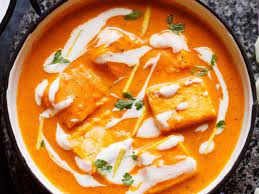

home
Paneer Butter Masala

Paneer Butter Masala
This is a creamy indian curry dish made with tomatos and paneer
It goes well with naan or basmati rice
Ingredients
- 1/4 cup butter
- 1 pound paneer, cut into 1/2-inch cubes
- 2 onions, finely chopped
- 1 green bell pepper, chopped
- 2 jalepeno peppers, chopped
- 1 tablespoon ground cashews
- 1 teaspoon garlic paste
- 1 teaspoon ginger paste
- 1 teaspoon cayenne pepper
- 1 teaspoon ground cumin
- 1 teaspoon ground coriander
- 1 teaspoon garam masala
- 1 (16 ounce) can tomato sauce
- 1 pint half-and-half
- 1 teaspoon salt, or to taste
Steps
-
Melt butter in a skillet over medium heat; cook and stir paneer until
golden, about 5 minutes. Add onions, green bell pepper, jalapeno
peppers, cashews, garlic paste, ginger paste, cayenne pepper, cumin,
coriander, and garam masala to paneer; cook and stir until fragrant and
evenly coated, about 1 minute.
-
Mix tomato sauce, half-and-half, and salt into paneer mixture; simmer
until thickened, about 30 minutes.